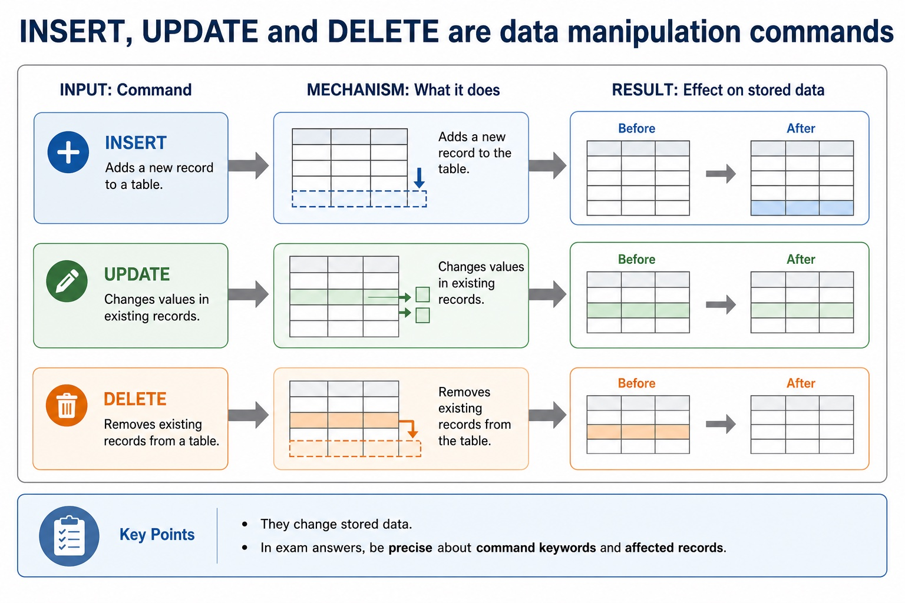

S8.07 | Visual relationships, mechanisms and worked examples.
Quickdiagnose + essentials
Fullcomplete explanation
Deepprerequisites + extension
Choosepractice by need
Teacher choice
Choose the depth for this group
Quick route
Use the diagnostic, learning objectives, first worked example and foundation question. Stop once the learner can explain the central distinction accurately.
Full route
Teach every knowledge-point material set, the worked method and all lesson questions.
Deep route
Add the prerequisite refresher, ask learners to connect the concept checklist, discuss the labelled extension and complete a transfer question without a model answer.
Part 1 | optional depth
Prerequisite knowledge and quick diagnostic
Recall the main conclusion from Lesson 041: DBMS architecture, integrity, security and backup.
Give one accurate definition or method step before continuing. If it is missing, revisit only that prerequisite.
Part 2 | explicit teaching
Learn each point through explanation, method and practice
Complete the default-visible explanation and worked example before using the visual recap.
01
S8.07 · structure
DDL creates/modifies structure, DML queries/maintains data, and SQL is an industry-standard language
Atomic learning targets
S8.07.A01 DDL
S8.07.A02 creation
S8.07.A03 modification
S8.07.A04 database structure
S8.07.A05 DML
S8.07.A06 queries
S8.07.A07 maintenance
S8.07.A08 SQL
S8.07.A09 industry-standard
S8.07.A10 language
Core explanation
DDL is used for the creation and modification of database structure. DML is used for queries and maintenance of stored data. SQL is an industry-standard language that includes both kinds of operation.
A query uses SELECT fields FROM a table, may filter rows with WHERE, sort with ORDER BY and form aggregate groups with GROUP BY. SUM totals values, COUNT counts rows or values, and AVG calculates a mean. An INNER JOIN uses ON to match at most two tables in the required AS queries.
DDL creates/modifies structure, DML queries/maintains data, and SQL is an industry-standard language.
DDL is used for the creation and modification of database structure.
Mechanism or method
Cause
Identify the relevant condition or input
DDL is used for the creation and modification of database structure.
Mechanism
Trace how the process works
DML is used for queries and maintenance of stored data.
Consequence
Connect the mechanism to its result
SQL is an industry-standard language that includes both kinds of operation.
Worked example: DDL creates/modifies structure, DML queries/maintains data, and SQL is an industry-standard language: complete worked route
Identify the relevant condition or input
DDL is used for the creation and modification of database structure.
Trace how the process works
DML is used for queries and maintenance of stored data.
Connect the mechanism to its result
SQL is an industry-standard language that includes both kinds of operation.
Complete example
Classify database operations: CREATE TABLE is DDL because it creates database structure. SELECT and UPDATE are DML because they query or maintain stored data.
Mastery check
Explain the following targets in one connected answer, using a concrete example for each: DDL; creation; modification; database structure; DML; queries; maintenance; SQL; industry-standard; language.
Show answer criteria
DDL is used for the creation and modification of database structure. DML is used for queries and maintenance of stored data. SQL is an industry-standard language that includes both kinds of operation.
A query uses SELECT fields FROM a table, may filter rows with WHERE, sort with ORDER BY and form aggregate groups with GROUP BY. SUM totals values, COUNT counts rows or values, and AVG calculates a mean. An INNER JOIN uses ON to match at most two tables in the required AS queries.
DDL creates/modifies structure, DML queries/maintains data, and SQL is an industry-standard language.
DDL is used for the creation and modification of database structure.
Supplementary visual recap
Use these cards and diagrams to reinforce the explanation above; they are not a substitute for it.
Concept relationships
DDLDDL is used for the creation and modification of database structure. DML is used for queries and maintenance of stored data. SQL is an industry-standard language that includes both kinds of operation.
creationDDL is used for the creation and modification of database structure. DML is used for queries and maintenance of stored data. SQL is an industry-standard language that includes both kinds of operation.
modificationDDL is used for the creation and modification of database structure. DML is used for queries and maintenance of stored data. SQL is an industry-standard language that includes both kinds of operation.
database structureDDL is used for the creation and modification of database structure. DML is used for queries and maintenance of stored data. SQL is an industry-standard language that includes both kinds of operation.
DMLDDL is used for the creation and modification of database structure. DML is used for queries and maintenance of stored data. SQL is an industry-standard language that includes both kinds of operation.
queriesDDL is used for the creation and modification of database structure. DML is used for queries and maintenance of stored data. SQL is an industry-standard language that includes both kinds of operation.
Method recap
Cause
Identify the relevant condition or input
DDL is used for the creation and modification of database structure.
Mechanism
Trace how the process works
DML is used for queries and maintenance of stored data.
Consequence
Connect the mechanism to its result
SQL is an industry-standard language that includes both kinds of operation.
S8.07 diagrams
01
Diagram · 1 of 1
INSERT, UPDATE and DELETE are data manipulation commands

Open text transcript
They change stored data. In exam answers, be precise about command keywords and affected records.
INSERT Adds a new record to a table.
UPDATE Changes values in existing records.
DELETE Removes existing records from a table.
Open precise syllabus wording
Understand DDL creates/modifies structure, DML queries/maintains data, and SQL is an industry-standard language.
the syllabus distinguishes DBMS creation/modification of database structure through DDL from queries and data maintenance through DML, and identifies SQL as the industry standard for both.
Lesson technical reference
the syllabus distinguishes DBMS creation/modification of database structure through DDL from queries and data maintenance through DML, and identifies SQL as the industry standard for both.
DDL is used for the creation and modification of database structure. DML is used for queries and maintenance of stored data. SQL is an industry-standard language that includes both kinds of operation.
Keep the schema and the records distinct: defining a table or constraint changes structure, while selecting, inserting, deleting or updating records works with stored data.
Database design review: connect each file-based limitation to a relational or DBMS mechanism; use entity/table, record/tuple and field/attribute precisely; distinguish candidate, primary, secondary and foreign keys; classify one-to-one, one-to-many and many-to-many relationships; apply referential integrity and indexing; document the design with an E-R diagram; and explain or produce 1NF, 2NF and 3NF designs.
DBMS and SQL review: identify data management/data dictionary, data modelling, logical schema, integrity, security/backup/access rights, developer interface and query processor. Distinguish DDL structure commands from DML query/maintenance commands, use every required data type and key clause, and keep SELECT queries to at most two tables with explicit INNER JOIN ... ON when two tables are needed.
A complete answer follows the scenario through design, statement and result. It does not claim that a primary key prevents every duplicate fact, that a secondary key must be unique, that normalisation guarantees correctness, or that a three-table/comma-style query is within the AS core boundary.
A record is also called a tuple; both terms describe one row containing fields or attributes for one entity occurrence.
A query uses SELECT fields FROM a table, may filter rows with WHERE, sort with ORDER BY and form aggregate groups with GROUP BY. SUM totals values, COUNT counts rows or values, and AVG calculates a mean. An INNER JOIN uses ON to match at most two tables in the required AS queries.
Part 3 | select by learner need
Practice by question type
identifyrecallfoundation3 marks
Question 1. Identify CREATE TABLE, SELECT and UPDATE as DDL or DML and explain the distinction.
Show answer and marking guidance
Answer: DDL creation/modification of structure; DML queries/maintenance; SQL identified as industry-standard language
Marking guidance: Do not describe every SQL statement as changing stored records.
Common error: For the command word identify, perform that exact action; do not replace it with an unrelated fact.
applyrecallapplication2 marks
Question 2. Which SQL language category changes table structure?
Show answer and marking guidance
Answer: DDL.
Marking guidance: Award one mark for each distinct, technically accurate point or method step.
Common error: Do not repeat the same point in different words; each mark needs a separate idea or method step.
explainexplaintransfer3 marks
Question 3. Explain how ddl, dml and the role of sql would be applied in a suitable computing context.
Show answer and marking guidance
Answer: DDL is used for the creation and modification of database structure. DML is used for queries and maintenance of stored data. SQL is an industry-standard language that includes both kinds of operation. Keep the schema and the records distinct: defining a table or constraint changes structure, while selecting, inserting, deleting or updating records works with stored data. Database design review: connect each file-based limitation to a relational or DBMS mechanism; use entity/table, record/tuple and field/attribute precisely; distinguish candidate, primary, secondary and foreign keys; classify one-to-one, one-to-many and many-to-many relationships; apply referential integrity and indexing; document the design with an E-R diagram; and explain or produce 1NF, 2NF and 3NF designs.
Marking guidance: Each mark needs a relevant point linked to the stated context.
Common error: Do not copy the worked example unchanged; transfer the method and check it against the new context.
Related past-paper indexes
Reference
Marks
Command word
Question type
9618/13/W/25 Q5(b)
4
complete
recall
9618/11/W/24 Q2(ii)
5
define
recall
9618/12/S/24 Q4(d)
5
define
recall
9618/13/S/24 Q6
4
define
recall
Index only: Cambridge question and mark-scheme wording is not reproduced on this public course page.